library(tidyverse)
library(mosaic)Model specification
Correlation as model building
Correlation is actually a simple case of model building in which we use one value (\(x\)) to predict another (\(y\)). Specifically, we are fitting the linear model \(y = ax + b\), where \(a\) and \(b\) are free parameters. Here, \(y\) is known as the response variable (the value we are trying to predict) and \(x\) is the explanatory variable (the one that we are attempting to explain the response variable with).
- After z-scoring our variables, the correlation between \(x\) and \(y\) is equal to the slope of the line that best predicts \(y\) from \(x\).
Model building overview
Ideally we want to understand statistical modeling beyond the simple case of correlation. What if we have more than one explanatory variable? What if the relationship between variables is not linear? To address model building more broadly, it is helpful to think of building any model as a four-step process. We’ll treat each of these separately over the coming weeks. The goal for today is to get a big picture overview of the model building process and the types of models we might encounter in our research.
- Model specification (this week): what is the form?
- Model fitting (this week); you have the form, how do you guess the free parameters?
- Model accuracy (after break): you’ve estimated the parameters, how well does that model describe your data?
- Model reliability (after break): when you estimate the parameters, there is some uncertainty on them
Types of models
Model specification involves deciding which type of model we’d like to apply. We will mostly apply linear models in this class, but it’s useful to first have a conceptual overview of the types of models we could apply.
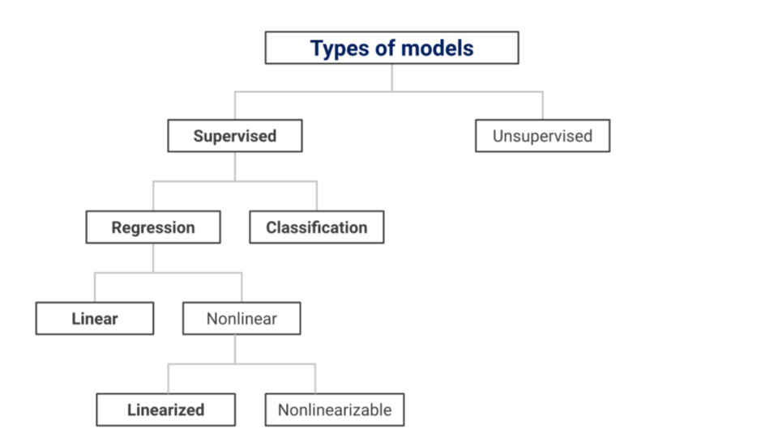
Supervised vs unsupervised
As a starting point, we can divide statistical models into two types of learning (so called because we are trying to “learn” something about the data):
- In supervised learning, we want to predict an output (or response) variable based on one or more input (or explanatory) variables. We call this supervised learning because both the input and output variables are known (sometimes this is called “labeled” data), and we are trying to learn the relationship between them. Linear regression is an example of a supervised learning model.
- In unsupervised learning, there is no specific output variable that we are trying to predict. Instead, the model’s objective is to discover the underlying structure or patterns in the data. We call this unsupervised learning because only the input data is available (sometimes this is called “unlabeled” data); the model is trying to identify relationships in the data without being “supervised” by an outcome variable. PCA and cluster analysis are examples of unsupervised learning.
- There are other machine learning approaches beyond these, like semi-supervised learning (combining both labeled and unlabeled data) and reinforcement learning (learning through trial and error based on rewards or penalties). But in this course we will focus on supervised learning models.
Regression v classification
Regression and classification are both types of supervised learning models — using one or more input variables to predict an output variable. The only difference between them is in type of output variable:
- Regression is used when we want to predict a continuous output, meaning it is a number that can take on any value within a range (e.g. height, weight, response time)
- Classification is used when we want to predict a categorical output, meaning it falls into specific classes or categories (e.g. true/false, yes/no, male/female/nonbinary). We cover this during advanced model building.
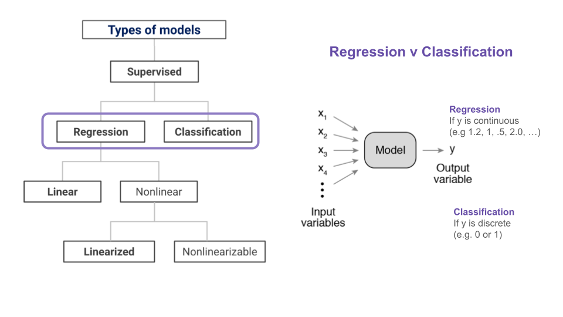
Linear v nonlinear regression
There are many types of regression models, but we can simplify by dividing them into two main types of models:
- In linear regression, the relationship between the explanatory variable(s) and response variable is represented by a linear equation (a straight line graphed on a two-dimensional plane).
- Nonlinear regression is useful when the data does not follow a linear pattern, and the relationship between the variables is better captured by more complex functions (e.g. a curve or any other nonlinear shape). Nonlinear regression models can be further divided into two types:
- We can linearize a nonlinear model by applying a mathematical transformation to make it look like a linear equation (e.g. log, square root, etc). We can fit a linearized model just like a linear model, but the prediction of the model is not linear with respect to x.
- Sometimes, no matter what transformation you apply, you cannot acheive a linear form. These types of models are referred to as nonlinearizable nonlinear models and are beyond the scope of this class!
Model specification
Recall from last week that model specification is one aspect of the model building process. It involves selecting the functional form of the model (the type of model) and choosing which variables to include. When specifying a model, you’ll need to make the following decisions:
- Response variable (\(y\)): Choose the variable you want to predict or explain (output).
- Explanatory variables(\(x_n\)): Choose the variables that may explain the variation in the response variable (inputs).
- Functional form: Specify the functional relationship between the response and explanatory variables. For linear models, the relationship is linear, and we use the linear model equation as our functional form!
- Model terms: Choose which model terms to include, which is another way of saying that you need to decide how to include your explanatory variables in the model (since they can be included in more than one way).
In addition to the decisions above, the following issues can also be considered part of the model specification process. But we will consider these in future weeks.
- Model assumptions: Check any assumptions underlying the model you selected (e.g. does the model assume the relationship is linear?).
- Model complexity: Simple models are easier to interpret but may not capture all complexities in the data. Complex models may suffer from overfitting the data or being difficult to interpret.
A well-specified model should be based on a clear understanding of the data, the underlying relationships, and the research question.
Response variable, \(y\)
Choosing the response variable is usually straightforward once you’ve clearly defined your research question: what is the thing you are trying to understand? You also need to make sure whatever you’ve selected is something you can measure (or has already been measured!)
- In the swim records example, we are trying to explain variation in record times, so we choose record time as our \(y\). In the brain size example we are trying to explain variation in brain sizes, so we choose brain size as our \(y\).
- Remember from last time that we can use regression for continuous response variables (numbers) but we need to use classification if the response variable is categorical (categories or levels).
Explanatory variables, \(x_n\)
Choosing which explanatory variables to include requires a bit more careful consideration. It’s one part using your knowledge about the domain you are studying and one part exploratory data analysis!
- One extreme would be to include just one explanatory variable: the obvious one based on your research question. In the swim records example, we want to understand how swim records change over time, so we should definitely include
timeas an explanatory variable. But this model is underspecified. We need to consider other variables that have the potential to explain variation in our response variable, even if they are not of direct interest. For example, some variation in swim record times can likely be explained by the swimmer’s gender, so we should includegenderas an explanatory variable in our model. - Importantly, we do not include every explanatory variable we can think of! We want to explain the variation in our response variable without building too complex a model or overfitting the data (overspecifying). We’ll go into more detail about this in future lectures. For now, just remember you’re Goldilocks: you want the explanatory variables in the model to explain just the right amount of variation.
Functional form
When specifying the functional form of a model, we’re literally specifying the mathematical formula we’re going to use to represent the relationship between our response and explanatory variables. Linear models – our focus in this class – are models in which the response variable (output) is a weighted sum of the explanatory variables (inputs). In other words, there is a linear relationship between the response variable and the explanatory variables. The linear model equation can be expressed in many ways (which can be confusing!). Here are four different ways of representing the formula for the linear model (the functional form), to emphasize that they are all the same thing.
- In high school algebra, the linear model equation is represented as the equation of a straight line. \(y\) is the response variable, \(x\) is the explanatory variable, \(a\) is the slope of the line (the relationship between \(x\) and \(y\)) and \(b\) is the y-intercept (the value of \(y\) when \(x\) is zero). You have (hopefully!) already encountered this equation.
- \(y=ax+b\).
- In machine learning, the linear model equation is usually represented as a weighted sum of input variables. Note that the only changes are that we refer to the free parameters as weights (\(w_n\)) instead of \(a\) and \(b\) (to emphasize these are the weights the model learns) and the ability to add more than one input (\(x_1, x_2, ...x_n\) instead of just \(x\)):
- \(y = w_0 + w_1x_1 + w_2x_2 + ... + w_nx_n\)
- In statistics, the linear model equation is also represented as a weighted sum of input variables, except we call the weights “regression coefficients” (\(\beta_n\)) and we add an error term to account for unexplained variability (\(\varepsilon\)):
- \(y = β_0 + β_1x_1 + β_2x_2 + ... + β_nx_n + ε\)
- In matrix notation, the linear model equation is represented as a dot product of vectors. This is just a more compact representation of the statistics (or machine learning) way, often used in linear algebra and statistics. \(X\) is the matrix containing the values of the explanatory variables, \(β\) is the vector of regression coefficients, and \(\varepsilon\) is the vector of error terms.
- \(y = Xβ + ε\)
Model terms
We’ve specified our response and explanatory variables and the functional form of our model. Now we need to specify the model terms. Model terms describe how to include the explanatory variables in our model (they can be included in more than one way!) There are four kinds of terms: (1) intercept, (2) main, (3) interaction, and (4) transformation.
- The intercept term, \(\beta_0\), is a constant (not variable) capturing the typical value of the response variable when all explanatory variables are zero. It allows the model to have an offset from the origin, so it is also called the “offset” parameter in some fields. Unless it makes sense for our response variable to be zero when all other variables are zero (it rarely does!) we should include the intercept term.
- in R:
y ~ 1 - in eq: \(y=\beta_0 + \varepsilon\)
- Main terms (AKA main effects) represent the effect of each explanatory variable on the response variable directly. In other words, how does the response variable change as a result of changes in a given explanatory variable, when all other explanatory variables are zero? Each main term corresponds to one explanatory variable and is included in the model as a single term (\(\beta_nx_n\)). We can add as many explanatory variables as we like to the model:
- in R:
y ~ 1 + year + gender - in eq: \(y = \beta_0 + \beta_1x_1 + \beta_2x_2\)
- Note that can include categorical explanatory variables like gender, we just need to find a way to represent the same information numerically, since linear models require numerical inputs.
- Interaction terms allow us to express that the effect of one explanatory variable on the response variable is different at different values of another explanatory variable. For example, in the swim records data, the effect of gender on record times changes over year (or said another way, the effect of year on record times is different for men and women). We are still describing how variation in the response variable is explained by one or more explanatory variables, we’re just describing how two (or more) variables combine to influence the response. In the linear model equation, we add a term to the model in which we multiply the values of the interacting variables.
- in R:
y ~ 1 + year + gender + year:gender- or the short way:
y ~ 1 + year * gender
- or the short way:
- in eq: \(y = \beta_0 + \beta_1x_1 + \beta_2x_2 + \beta_3x_1x_2\)
- Transformation terms allow us to modify the explanatory variables to accommodate nonlinear relationships with the response variable. Some of the most common transformations are \(x^2\), \(\sqrt{x}\), and \(log(x)\). Note that \(x\) must be a quantitative variable: we can’t transform categorical variables. In the swim records example, squaring the year term (\(x_1^2\)) allowed our model to have a curve shape. But notice that this makes it seem like record times are slowing down after 1990. This is obviously not the case — records inherently only get faster! — but models lack common sense, and there is no easy math way to tell our model to “be curvy, but also never slope upward”.
- in R:
y ~ sq(year) * gender - eq: \(y = \beta_0 + \beta_1x_1^2 + \beta_2x_2 + \beta_3x_1^2x_2\)
Examples!
Now that we’ve covered the terminology and concepts, let’s apply model specification to some real models.
“Toy” data
Let’s start with the simplest possible example, a dataset with two data points. Suppose you record how many days you study over the next 5 days. On day 1, you study for 2 hours. On day 2, you study for 6 hours and so on. Your dataset might look something like this.
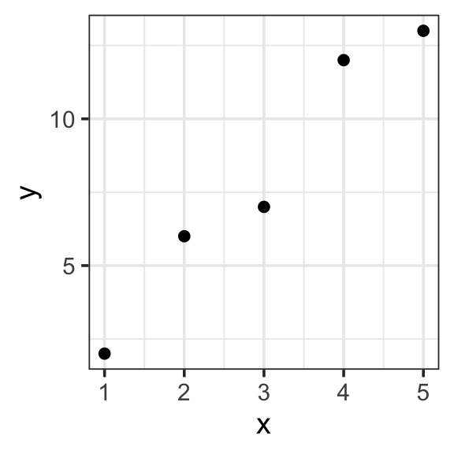
| x | y |
|---|---|
| 1 | 2 |
| 2 | 6 |
| 3 | 7 |
| 4 | 12 |
| 5 | 13 |
toy_data <- tibble(
x = c(1, 2, 3, 4, 5),
y = c(2, 6, 7, 12, 13)
)
toy_data %>%
ggplot(aes(x = x, y = y)) +
geom_point() +
theme_bw(base_size = 14) - Specify our response variable, \(y\): the response variable (🥸 data, output, prediction) is the variable you are trying to predict or explain with your model.
y
- Specify explantory variables, \(x_i\): the explanatory variables (🥸 regressors, inputs, predictors) are the predictors in your data that could help explain the response variable. Our data has only one possible:
x
- Specify the functional form: the functional form describes the relationship between the response and explanatory variables with a mathematical expresson. In a linear model, we express this relationship as a weighted sum of inputs:
- \(y=\sum_{i=1}^{n}w_ix_i\)
- Specify model terms: here we need to specify exactly how to express our explanatory variables in our functional form. The actual variables and constants that will be included in the model. There are four kinds of terms: (1) intercept, (2) main, (3) interaction, and (4) transformation. Here we have the simplest case of an intercept and one main term (no interactions or transformations necessary)
- \(y = w_1\mathbf{1} + w_2x_2\)
- in R:
y ~ 1 + x
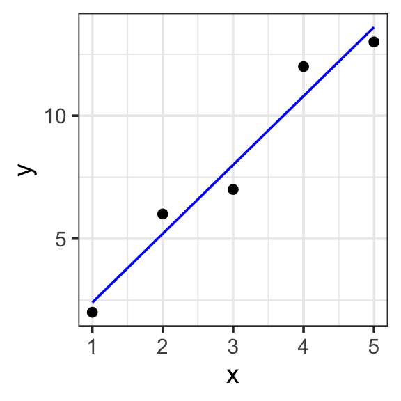
Model specification:
\(y = w_1\cdot\mathbf{1} + w_2\cdot\mathbf{x}\)
Call:
lm(formula = y ~ 1 + x, data = toy_data)
Coefficients:
(Intercept) x
-0.4 2.8 Fitted model:
\(y = -0.4\cdot1 + 2.8\cdot x\)
| x | y | with_formula | with_predict |
|---|---|---|---|
| 1 | 2 | 2.4 | 2.4 |
| 2 | 6 | 5.2 | 5.2 |
| 3 | 7 | 8.0 | 8.0 |
| 4 | 12 | 10.8 | 10.8 |
| 5 | 13 | 13.6 | 13.6 |
model <- lm(y ~ 1 + x, data = toy_data)
toy_data <- toy_data %>%
mutate(with_formula = -0.4*1 + 2.8*x) %>%
mutate(with_predict= predict(model, toy_data))
toy_data %>%
ggplot(aes(x = x, y = y)) +
geom_point() +
geom_line(aes(y = with_predict), color = "blue") +
theme_bw(base_size = 14) Swim records
One input
If our model has a single input, it is likely the intercept term, a constant (not variable) capturing the typical value of the response variable when all explanatory variables are zero.
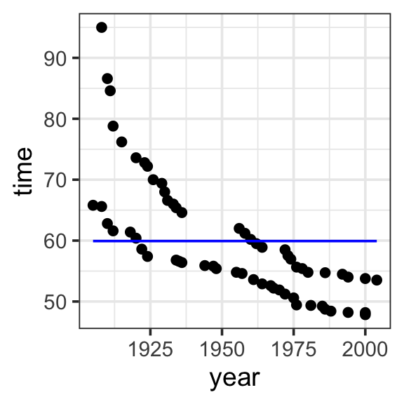
Model specification:
\(y = w_1\cdot\mathbf{1}\)
Call:
lm(formula = time ~ 1, data = SwimRecords)
Coefficients:
(Intercept)
59.92 Fitted model:
\(y = 59.92 \cdot 1\)
| year | time | sex | with_formula | with_predict |
|---|---|---|---|---|
| 1905 | 65.80 | M | 59.92 | 59.92419 |
| 1908 | 65.60 | M | 59.92 | 59.92419 |
| 1910 | 62.80 | M | 59.92 | 59.92419 |
| 1912 | 61.60 | M | 59.92 | 59.92419 |
| 1918 | 61.40 | M | 59.92 | 59.92419 |
| 1920 | 60.40 | M | 59.92 | 59.92419 |
| 1922 | 58.60 | M | 59.92 | 59.92419 |
| 1924 | 57.40 | M | 59.92 | 59.92419 |
| 1934 | 56.80 | M | 59.92 | 59.92419 |
| 1935 | 56.60 | M | 59.92 | 59.92419 |
| 1936 | 56.40 | M | 59.92 | 59.92419 |
| 1944 | 55.90 | M | 59.92 | 59.92419 |
| 1947 | 55.80 | M | 59.92 | 59.92419 |
| 1948 | 55.40 | M | 59.92 | 59.92419 |
| 1955 | 54.80 | M | 59.92 | 59.92419 |
| 1957 | 54.60 | M | 59.92 | 59.92419 |
| 1961 | 53.60 | M | 59.92 | 59.92419 |
| 1964 | 52.90 | M | 59.92 | 59.92419 |
| 1967 | 52.60 | M | 59.92 | 59.92419 |
| 1968 | 52.20 | M | 59.92 | 59.92419 |
| 1970 | 51.90 | M | 59.92 | 59.92419 |
| 1972 | 51.22 | M | 59.92 | 59.92419 |
| 1975 | 50.59 | M | 59.92 | 59.92419 |
| 1976 | 49.44 | M | 59.92 | 59.92419 |
| 1981 | 49.36 | M | 59.92 | 59.92419 |
| 1985 | 49.24 | M | 59.92 | 59.92419 |
| 1986 | 48.74 | M | 59.92 | 59.92419 |
| 1988 | 48.42 | M | 59.92 | 59.92419 |
| 1994 | 48.21 | M | 59.92 | 59.92419 |
| 2000 | 48.18 | M | 59.92 | 59.92419 |
| 2000 | 47.84 | M | 59.92 | 59.92419 |
| 1908 | 95.00 | F | 59.92 | 59.92419 |
| 1910 | 86.60 | F | 59.92 | 59.92419 |
| 1911 | 84.60 | F | 59.92 | 59.92419 |
| 1912 | 78.80 | F | 59.92 | 59.92419 |
| 1915 | 76.20 | F | 59.92 | 59.92419 |
| 1920 | 73.60 | F | 59.92 | 59.92419 |
| 1923 | 72.80 | F | 59.92 | 59.92419 |
| 1924 | 72.20 | F | 59.92 | 59.92419 |
| 1926 | 70.00 | F | 59.92 | 59.92419 |
| 1929 | 69.40 | F | 59.92 | 59.92419 |
| 1930 | 68.00 | F | 59.92 | 59.92419 |
| 1931 | 66.60 | F | 59.92 | 59.92419 |
| 1933 | 66.00 | F | 59.92 | 59.92419 |
| 1934 | 65.40 | F | 59.92 | 59.92419 |
| 1936 | 64.60 | F | 59.92 | 59.92419 |
| 1956 | 62.00 | F | 59.92 | 59.92419 |
| 1958 | 61.20 | F | 59.92 | 59.92419 |
| 1960 | 60.20 | F | 59.92 | 59.92419 |
| 1962 | 59.50 | F | 59.92 | 59.92419 |
| 1964 | 58.90 | F | 59.92 | 59.92419 |
| 1972 | 58.50 | F | 59.92 | 59.92419 |
| 1973 | 57.54 | F | 59.92 | 59.92419 |
| 1974 | 56.96 | F | 59.92 | 59.92419 |
| 1976 | 55.65 | F | 59.92 | 59.92419 |
| 1978 | 55.41 | F | 59.92 | 59.92419 |
| 1980 | 54.79 | F | 59.92 | 59.92419 |
| 1986 | 54.73 | F | 59.92 | 59.92419 |
| 1992 | 54.48 | F | 59.92 | 59.92419 |
| 1994 | 54.01 | F | 59.92 | 59.92419 |
| 2000 | 53.77 | F | 59.92 | 59.92419 |
| 2004 | 53.52 | F | 59.92 | 59.92419 |
model <- lm(time ~ 1, data = SwimRecords)
SwimRecords_predict <- SwimRecords %>%
mutate(with_formula = 59.92*1) %>%
mutate(with_predict= predict(model, SwimRecords))
SwimRecords_predict %>%
ggplot(aes(x = year, y = time)) +
geom_point() +
geom_line(aes(y = with_predict), color = "blue") +
theme_bw(base_size = 14) Two inputs
We can add another term to our model represnting the effect of year on record time. This is a main term or main effect, which represents the effect of each explanatory variable on the response variable directly. In other words, how does record time change as a result of changes in year, when all other explanatory variables are zero?
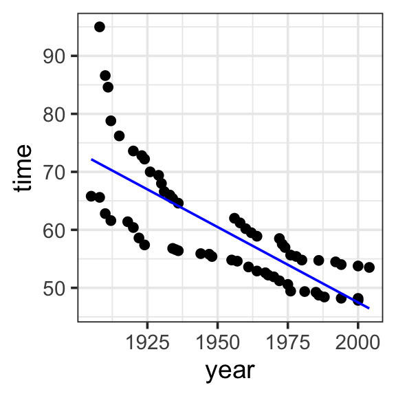
Model specification:
\(y = w_1\cdot\mathbf{1} + w_2\cdot\mathbf{year}\)
Call:
lm(formula = time ~ 1 + year, data = SwimRecords)
Coefficients:
(Intercept) year
567.2420 -0.2599 Fitted model:
\(y = 567.2420 \cdot \mathbf{1} + -0.2599 \cdot \mathbf{year}\)
| year | time | sex | with_formula | with_predict |
|---|---|---|---|---|
| 1905 | 65.80 | M | 72.1325 | 72.17614 |
| 1908 | 65.60 | M | 71.3528 | 71.39651 |
| 1910 | 62.80 | M | 70.8330 | 70.87676 |
| 1912 | 61.60 | M | 70.3132 | 70.35700 |
| 1918 | 61.40 | M | 68.7538 | 68.79774 |
| 1920 | 60.40 | M | 68.2340 | 68.27798 |
| 1922 | 58.60 | M | 67.7142 | 67.75823 |
| 1924 | 57.40 | M | 67.1944 | 67.23848 |
| 1934 | 56.80 | M | 64.5954 | 64.63971 |
| 1935 | 56.60 | M | 64.3355 | 64.37983 |
| 1936 | 56.40 | M | 64.0756 | 64.11995 |
| 1944 | 55.90 | M | 61.9964 | 62.04093 |
| 1947 | 55.80 | M | 61.2167 | 61.26130 |
| 1948 | 55.40 | M | 60.9568 | 61.00143 |
| 1955 | 54.80 | M | 59.1375 | 59.18229 |
| 1957 | 54.60 | M | 58.6177 | 58.66253 |
| 1961 | 53.60 | M | 57.5781 | 57.62302 |
| 1964 | 52.90 | M | 56.7984 | 56.84339 |
| 1967 | 52.60 | M | 56.0187 | 56.06376 |
| 1968 | 52.20 | M | 55.7588 | 55.80388 |
| 1970 | 51.90 | M | 55.2390 | 55.28413 |
| 1972 | 51.22 | M | 54.7192 | 54.76438 |
| 1975 | 50.59 | M | 53.9395 | 53.98474 |
| 1976 | 49.44 | M | 53.6796 | 53.72487 |
| 1981 | 49.36 | M | 52.3801 | 52.42548 |
| 1985 | 49.24 | M | 51.3405 | 51.38597 |
| 1986 | 48.74 | M | 51.0806 | 51.12610 |
| 1988 | 48.42 | M | 50.5608 | 50.60634 |
| 1994 | 48.21 | M | 49.0014 | 49.04708 |
| 2000 | 48.18 | M | 47.4420 | 47.48782 |
| 2000 | 47.84 | M | 47.4420 | 47.48782 |
| 1908 | 95.00 | F | 71.3528 | 71.39651 |
| 1910 | 86.60 | F | 70.8330 | 70.87676 |
| 1911 | 84.60 | F | 70.5731 | 70.61688 |
| 1912 | 78.80 | F | 70.3132 | 70.35700 |
| 1915 | 76.20 | F | 69.5335 | 69.57737 |
| 1920 | 73.60 | F | 68.2340 | 68.27798 |
| 1923 | 72.80 | F | 67.4543 | 67.49835 |
| 1924 | 72.20 | F | 67.1944 | 67.23848 |
| 1926 | 70.00 | F | 66.6746 | 66.71872 |
| 1929 | 69.40 | F | 65.8949 | 65.93909 |
| 1930 | 68.00 | F | 65.6350 | 65.67921 |
| 1931 | 66.60 | F | 65.3751 | 65.41934 |
| 1933 | 66.00 | F | 64.8553 | 64.89958 |
| 1934 | 65.40 | F | 64.5954 | 64.63971 |
| 1936 | 64.60 | F | 64.0756 | 64.11995 |
| 1956 | 62.00 | F | 58.8776 | 58.92241 |
| 1958 | 61.20 | F | 58.3578 | 58.40266 |
| 1960 | 60.20 | F | 57.8380 | 57.88290 |
| 1962 | 59.50 | F | 57.3182 | 57.36315 |
| 1964 | 58.90 | F | 56.7984 | 56.84339 |
| 1972 | 58.50 | F | 54.7192 | 54.76438 |
| 1973 | 57.54 | F | 54.4593 | 54.50450 |
| 1974 | 56.96 | F | 54.1994 | 54.24462 |
| 1976 | 55.65 | F | 53.6796 | 53.72487 |
| 1978 | 55.41 | F | 53.1598 | 53.20511 |
| 1980 | 54.79 | F | 52.6400 | 52.68536 |
| 1986 | 54.73 | F | 51.0806 | 51.12610 |
| 1992 | 54.48 | F | 49.5212 | 49.56683 |
| 1994 | 54.01 | F | 49.0014 | 49.04708 |
| 2000 | 53.77 | F | 47.4420 | 47.48782 |
| 2004 | 53.52 | F | 46.4024 | 46.44831 |
model <- lm(time ~ 1 + year, data = SwimRecords)
SwimRecords_predict <- SwimRecords %>%
mutate(with_formula = 567.2420*1 + -0.2599*year) %>%
mutate(with_predict= predict(model, SwimRecords))
SwimRecords_predict %>%
ggplot(aes(x = year, y = time)) +
geom_point() +
geom_line(aes(y = with_predict), color = "blue") +
theme_bw(base_size = 14) Three inputs
We can see that the previous model allowed us to capture the effect of year on record time, but we still have some unexplained variation. We can include sex in the model to capture the difference in record times by sex.
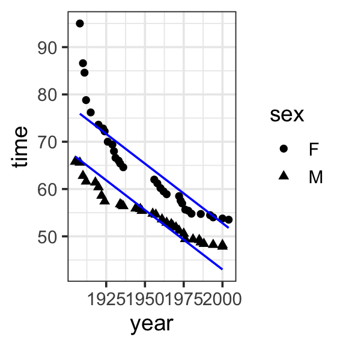
Model specification:
\(y = w_1\cdot\mathbf{1} + w_2\cdot\mathbf{year} + w_3\cdot\mathbf{sex}\)
Call:
lm(formula = time ~ 1 + year + sex, data = SwimRecords)
Coefficients:
(Intercept) year sexM
555.7168 -0.2515 -9.7980 Fitted model:
\(y = 555.7168 \cdot \mathbf{1} + -0.2515 \cdot \mathbf{year} + -9.7980 \cdot \mathbf{sex}\)
| year | time | sex | sex_numeric | with_formula | with_predict |
|---|---|---|---|---|---|
| 1905 | 65.80 | M | 1 | 66.8113 | 66.88051 |
| 1908 | 65.60 | M | 1 | 66.0568 | 66.12612 |
| 1910 | 62.80 | M | 1 | 65.5538 | 65.62319 |
| 1912 | 61.60 | M | 1 | 65.0508 | 65.12026 |
| 1918 | 61.40 | M | 1 | 63.5418 | 63.61148 |
| 1920 | 60.40 | M | 1 | 63.0388 | 63.10855 |
| 1922 | 58.60 | M | 1 | 62.5358 | 62.60563 |
| 1924 | 57.40 | M | 1 | 62.0328 | 62.10270 |
| 1934 | 56.80 | M | 1 | 59.5178 | 59.58806 |
| 1935 | 56.60 | M | 1 | 59.2663 | 59.33660 |
| 1936 | 56.40 | M | 1 | 59.0148 | 59.08513 |
| 1944 | 55.90 | M | 1 | 57.0028 | 57.07343 |
| 1947 | 55.80 | M | 1 | 56.2483 | 56.31903 |
| 1948 | 55.40 | M | 1 | 55.9968 | 56.06757 |
| 1955 | 54.80 | M | 1 | 54.2363 | 54.30732 |
| 1957 | 54.60 | M | 1 | 53.7333 | 53.80440 |
| 1961 | 53.60 | M | 1 | 52.7273 | 52.79854 |
| 1964 | 52.90 | M | 1 | 51.9728 | 52.04415 |
| 1967 | 52.60 | M | 1 | 51.2183 | 51.28976 |
| 1968 | 52.20 | M | 1 | 50.9668 | 51.03830 |
| 1970 | 51.90 | M | 1 | 50.4638 | 50.53537 |
| 1972 | 51.22 | M | 1 | 49.9608 | 50.03244 |
| 1975 | 50.59 | M | 1 | 49.2063 | 49.27805 |
| 1976 | 49.44 | M | 1 | 48.9548 | 49.02659 |
| 1981 | 49.36 | M | 1 | 47.6973 | 47.76927 |
| 1985 | 49.24 | M | 1 | 46.6913 | 46.76341 |
| 1986 | 48.74 | M | 1 | 46.4398 | 46.51195 |
| 1988 | 48.42 | M | 1 | 45.9368 | 46.00902 |
| 1994 | 48.21 | M | 1 | 44.4278 | 44.50024 |
| 2000 | 48.18 | M | 1 | 42.9188 | 42.99146 |
| 2000 | 47.84 | M | 1 | 42.9188 | 42.99146 |
| 1908 | 95.00 | F | 0 | 75.8548 | 75.92408 |
| 1910 | 86.60 | F | 0 | 75.3518 | 75.42115 |
| 1911 | 84.60 | F | 0 | 75.1003 | 75.16969 |
| 1912 | 78.80 | F | 0 | 74.8488 | 74.91822 |
| 1915 | 76.20 | F | 0 | 74.0943 | 74.16383 |
| 1920 | 73.60 | F | 0 | 72.8368 | 72.90651 |
| 1923 | 72.80 | F | 0 | 72.0823 | 72.15212 |
| 1924 | 72.20 | F | 0 | 71.8308 | 71.90066 |
| 1926 | 70.00 | F | 0 | 71.3278 | 71.39773 |
| 1929 | 69.40 | F | 0 | 70.5733 | 70.64334 |
| 1930 | 68.00 | F | 0 | 70.3218 | 70.39188 |
| 1931 | 66.60 | F | 0 | 70.0703 | 70.14041 |
| 1933 | 66.00 | F | 0 | 69.5673 | 69.63749 |
| 1934 | 65.40 | F | 0 | 69.3158 | 69.38602 |
| 1936 | 64.60 | F | 0 | 68.8128 | 68.88310 |
| 1956 | 62.00 | F | 0 | 63.7828 | 63.85382 |
| 1958 | 61.20 | F | 0 | 63.2798 | 63.35090 |
| 1960 | 60.20 | F | 0 | 62.7768 | 62.84797 |
| 1962 | 59.50 | F | 0 | 62.2738 | 62.34504 |
| 1964 | 58.90 | F | 0 | 61.7708 | 61.84211 |
| 1972 | 58.50 | F | 0 | 59.7588 | 59.83040 |
| 1973 | 57.54 | F | 0 | 59.5073 | 59.57894 |
| 1974 | 56.96 | F | 0 | 59.2558 | 59.32748 |
| 1976 | 55.65 | F | 0 | 58.7528 | 58.82455 |
| 1978 | 55.41 | F | 0 | 58.2498 | 58.32162 |
| 1980 | 54.79 | F | 0 | 57.7468 | 57.81869 |
| 1986 | 54.73 | F | 0 | 56.2378 | 56.30991 |
| 1992 | 54.48 | F | 0 | 54.7288 | 54.80113 |
| 1994 | 54.01 | F | 0 | 54.2258 | 54.29820 |
| 2000 | 53.77 | F | 0 | 52.7168 | 52.78942 |
| 2004 | 53.52 | F | 0 | 51.7108 | 51.78357 |
model <- lm(time ~ 1 + year + sex, data = SwimRecords)
SwimRecords_predict <- SwimRecords %>%
mutate(sex_numeric = case_when(
sex == 'M' ~ 1,
sex == 'F' ~ 0
)) %>%
mutate(with_formula = 555.7168*1 + -0.2515*year + -9.7980 *sex_numeric) %>%
mutate(with_predict= predict(model, SwimRecords))
SwimRecords_predict %>%
ggplot(aes(x = year, y = time, shape = sex)) +
geom_point() +
geom_line(aes(y = with_predict), color = "blue") +
theme_bw(base_size = 14) Interaction
Notice that the previous model now gets us record times getting faster by year, and different predictions for men and women (women have slower times). But this is missing another relationship we can see in our data: that women are getting faster, faster. To express that the effect of one explanatory variable on the response variable is different at different values of another explanatory variable (e.g. the effect of year on record times is different for men and women), we add a term to the model in which we multiply the values of the interacting variables.
We could say that we “expand the input space” of the model, since we add terms to capture the interaction
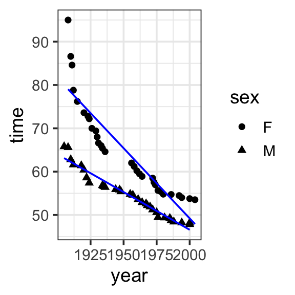
Model specification:
\(y = w_1\cdot\mathbf{1} + w_2\cdot\mathbf{year} + w_3\cdot\mathbf{sex} + w_4\cdot\mathbf{year\times{sex}}\)
Call:
lm(formula = time ~ 1 + year * sex, data = SwimRecords)
Coefficients:
(Intercept) year sexM year:sexM
697.3012 -0.3240 -302.4638 0.1499 Fitted model:
\[\begin{align}
y = &697.3012 \cdot \mathbf{1} + -0.3240 \cdot \mathbf{year} + -302.4638 \cdot \mathbf{sex}\\
&+ 0.1499 \cdot \mathbf{year\times{sex}}
\end{align}\]
| year | time | sex | with_predict |
|---|---|---|---|
| 1905 | 65.80 | M | 63.12106 |
| 1908 | 65.60 | M | 62.59867 |
| 1910 | 62.80 | M | 62.25041 |
| 1912 | 61.60 | M | 61.90215 |
| 1918 | 61.40 | M | 60.85738 |
| 1920 | 60.40 | M | 60.50912 |
| 1922 | 58.60 | M | 60.16086 |
| 1924 | 57.40 | M | 59.81260 |
| 1934 | 56.80 | M | 58.07131 |
| 1935 | 56.60 | M | 57.89718 |
| 1936 | 56.40 | M | 57.72305 |
| 1944 | 55.90 | M | 56.33002 |
| 1947 | 55.80 | M | 55.80763 |
| 1948 | 55.40 | M | 55.63350 |
| 1955 | 54.80 | M | 54.41459 |
| 1957 | 54.60 | M | 54.06634 |
| 1961 | 53.60 | M | 53.36982 |
| 1964 | 52.90 | M | 52.84743 |
| 1967 | 52.60 | M | 52.32504 |
| 1968 | 52.20 | M | 52.15091 |
| 1970 | 51.90 | M | 51.80266 |
| 1972 | 51.22 | M | 51.45440 |
| 1975 | 50.59 | M | 50.93201 |
| 1976 | 49.44 | M | 50.75788 |
| 1981 | 49.36 | M | 49.88723 |
| 1985 | 49.24 | M | 49.19072 |
| 1986 | 48.74 | M | 49.01659 |
| 1988 | 48.42 | M | 48.66833 |
| 1994 | 48.21 | M | 47.62355 |
| 2000 | 48.18 | M | 46.57878 |
| 2000 | 47.84 | M | 46.57878 |
| 1908 | 95.00 | F | 79.02170 |
| 1910 | 86.60 | F | 78.37361 |
| 1911 | 84.60 | F | 78.04956 |
| 1912 | 78.80 | F | 77.72552 |
| 1915 | 76.20 | F | 76.75338 |
| 1920 | 73.60 | F | 75.13315 |
| 1923 | 72.80 | F | 74.16101 |
| 1924 | 72.20 | F | 73.83697 |
| 1926 | 70.00 | F | 73.18887 |
| 1929 | 69.40 | F | 72.21674 |
| 1930 | 68.00 | F | 71.89269 |
| 1931 | 66.60 | F | 71.56864 |
| 1933 | 66.00 | F | 70.92055 |
| 1934 | 65.40 | F | 70.59651 |
| 1936 | 64.60 | F | 69.94842 |
| 1956 | 62.00 | F | 63.46750 |
| 1958 | 61.20 | F | 62.81941 |
| 1960 | 60.20 | F | 62.17131 |
| 1962 | 59.50 | F | 61.52322 |
| 1964 | 58.90 | F | 60.87513 |
| 1972 | 58.50 | F | 58.28276 |
| 1973 | 57.54 | F | 57.95872 |
| 1974 | 56.96 | F | 57.63467 |
| 1976 | 55.65 | F | 56.98658 |
| 1978 | 55.41 | F | 56.33849 |
| 1980 | 54.79 | F | 55.69040 |
| 1986 | 54.73 | F | 53.74612 |
| 1992 | 54.48 | F | 51.80185 |
| 1994 | 54.01 | F | 51.15375 |
| 2000 | 53.77 | F | 49.20948 |
| 2004 | 53.52 | F | 47.91330 |
model <- lm(time ~ 1 + year * sex, data = SwimRecords)
SwimRecords_predict <- SwimRecords %>%
mutate(with_predict= predict(model, SwimRecords))
SwimRecords_predict %>%
ggplot(aes(x = year, y = time, shape = sex)) +
geom_point() +
geom_line(aes(y = with_predict), color = "blue") +
theme_bw(base_size = 14) Transformation
Now our model is doing a great job at predicting our data, but there may be more we want to do. For example, we can see that the model is not predicting women very well around the year 2000 (it is predicting they will be faster than they are). If we want to allow the model to have a curve shape, capturing that women gained on men for a while, but are no slowing down, we can add a term to the model in which we square the year. This allows us to capture this nonlinear curve or bend in the data (more on this for polynomials in the next section).
but notice that the model is fitting the data well, but still behaving a bit non-sensical toward the 2000s, predicint that record times are getter slower! Impossible!)
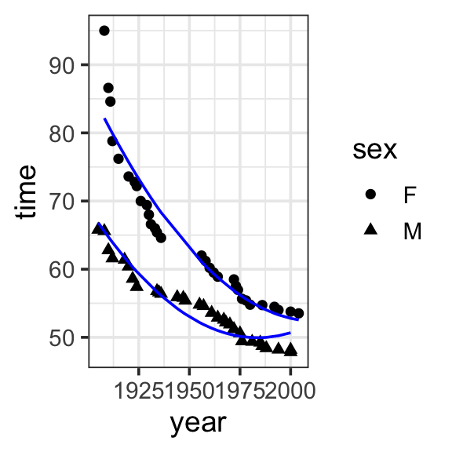
Model specification:
\[\begin{align}
y = &w_1\cdot\mathbf{1} + w_2\cdot\mathbf{year} + w_3\cdot\mathbf{sex} \\
&+ w_4\cdot\mathbf{year\times{sex}} +w_5\cdot\mathbf{year}^2
\end{align}\]
Call:
lm(formula = time ~ 1 + year * sex + I(year^2), data = SwimRecords)
Coefficients:
(Intercept) year sexM I(year^2) year:sexM
1.110e+04 -1.098e+01 -3.171e+02 2.729e-03 1.575e-01 Fitted model:
\[\begin{align}
y = &11100 \cdot \mathbf{1} + -10.98 \cdot \mathbf{year} + -317.1 \cdot \mathbf{sex}\\
&+ 0.1575 \cdot \mathbf{year\times{sex}} + 0.002729 \cdot \mathbf{year}^2
\end{align}\]
| year | time | sex | with_predict |
|---|---|---|---|
| 1905 | 65.80 | M | 66.81874 |
| 1908 | 65.60 | M | 65.55576 |
| 1910 | 62.80 | M | 64.74106 |
| 1912 | 61.60 | M | 63.94819 |
| 1918 | 61.40 | M | 61.70057 |
| 1920 | 60.40 | M | 60.99502 |
| 1922 | 58.60 | M | 60.31130 |
| 1924 | 57.40 | M | 59.64941 |
| 1934 | 56.80 | M | 56.66741 |
| 1935 | 56.60 | M | 56.39922 |
| 1936 | 56.40 | M | 56.13650 |
| 1944 | 55.90 | M | 54.23115 |
| 1947 | 55.80 | M | 53.60669 |
| 1948 | 55.40 | M | 53.40946 |
| 1955 | 54.80 | M | 52.18160 |
| 1957 | 54.60 | M | 51.87991 |
| 1961 | 53.60 | M | 51.34200 |
| 1964 | 52.90 | M | 50.99587 |
| 1967 | 52.60 | M | 50.69886 |
| 1968 | 52.20 | M | 50.61078 |
| 1970 | 51.90 | M | 50.45097 |
| 1972 | 51.22 | M | 50.31300 |
| 1975 | 50.59 | M | 50.14697 |
| 1976 | 49.44 | M | 50.10254 |
| 1981 | 49.36 | M | 49.96226 |
| 1985 | 49.24 | M | 49.94827 |
| 1986 | 48.74 | M | 49.95841 |
| 1988 | 48.42 | M | 49.99508 |
| 1994 | 48.21 | M | 50.23605 |
| 2000 | 48.18 | M | 50.67349 |
| 2000 | 47.84 | M | 50.67349 |
| 1908 | 95.00 | F | 82.16082 |
| 1910 | 86.60 | F | 81.03116 |
| 1911 | 84.60 | F | 80.47451 |
| 1912 | 78.80 | F | 79.92332 |
| 1915 | 76.20 | F | 78.30250 |
| 1920 | 73.60 | F | 75.71028 |
| 1923 | 72.80 | F | 74.22044 |
| 1924 | 72.20 | F | 73.73474 |
| 1926 | 70.00 | F | 72.77971 |
| 1929 | 69.40 | F | 71.38810 |
| 1930 | 68.00 | F | 70.93515 |
| 1931 | 66.60 | F | 70.48765 |
| 1933 | 66.00 | F | 69.60903 |
| 1934 | 65.40 | F | 69.17790 |
| 1936 | 64.60 | F | 68.33203 |
| 1956 | 62.00 | F | 61.07389 |
| 1958 | 61.20 | F | 60.46814 |
| 1960 | 60.20 | F | 59.88422 |
| 1962 | 59.50 | F | 59.32213 |
| 1964 | 58.90 | F | 58.78187 |
| 1972 | 58.50 | F | 56.83913 |
| 1973 | 57.54 | F | 56.62085 |
| 1974 | 56.96 | F | 56.40802 |
| 1976 | 55.65 | F | 55.99874 |
| 1978 | 55.41 | F | 55.61129 |
| 1980 | 54.79 | F | 55.24567 |
| 1986 | 54.73 | F | 54.27978 |
| 1992 | 54.48 | F | 53.51036 |
| 1994 | 54.01 | F | 53.29755 |
| 2000 | 53.77 | F | 52.79009 |
| 2004 | 53.52 | F | 52.56093 |
model <- lm(time ~ 1 + year * sex + I(year^2), data = SwimRecords)
SwimRecords_predict <- SwimRecords %>%
mutate(with_predict= predict(model, SwimRecords))
SwimRecords_predict %>%
ggplot(aes(x = year, y = time, shape = sex)) +
geom_point() +
geom_line(aes(y = with_predict), color = "blue") +
theme_bw(base_size = 14) Linearizing nonlinear models
When you want to linearlize a nonlinear model, you’re trying to fit a linear model to data that doesn’t naturally follow a straight line. There are two common ways to approach this:
- Expanding the input space with polynomials. Polynomials can capture “bumps” or curves in the data. In this approach, we add terms to the model, like squares or cubes of the original variable.
- \(y = w_1 + w_2x + w_3x^2\)
- Transforming the data involves applying mathematical functions to existing inputs to alter their scale or distributions. Common transformations include taking the logarithm or square root. Taking the logarithm of a variable compresses its range and reduces skewness in the data (as in the brain size and body weight data).
- both output and input: \(log(y) = w_1 + w_2 log(x)\)
- just input: \(y = w_1 + w_2 log(x)\)
Plant heights (polynomials)
Polynomials capture “bumps” or curves in the data, and the number of these bumps depends on the degree of the polynomial. The higher the degree, the more complex the shape the polynomial can represent.
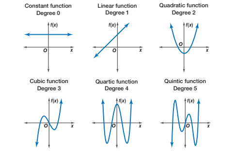
- Degree 1 (Linear): A straight line. There are no bumps or curves. The relationship between the predictor and the response is either increasing or decreasing at a constant rate.
- Degree 2 (Quadratic): A single bump or curve. The graph is either a U-shape (bowl) or an upside-down U-shape (hill), meaning it can capture one turning point.
- Degree 3 (Cubic): Can capture two bumps (or one “S” shaped curve). The graph can have two turning points, meaning it can start by increasing, then decrease, and increase again (or the opposite).
- Degree 4 (Quartic): Can capture three bumps or changes in direction. The graph can have up to three turning points, allowing for more complex shapes and curves in the data.
Degree 1 (Linear)
Remember, a Degree 1 (Linear) is a straight line. There are no bumps or curves. The relationship between the predictor and the response is either increasing or decreasing at a constant rate. This doesn’t seem to capture the relationship between light_exposure and plant_height in our data.
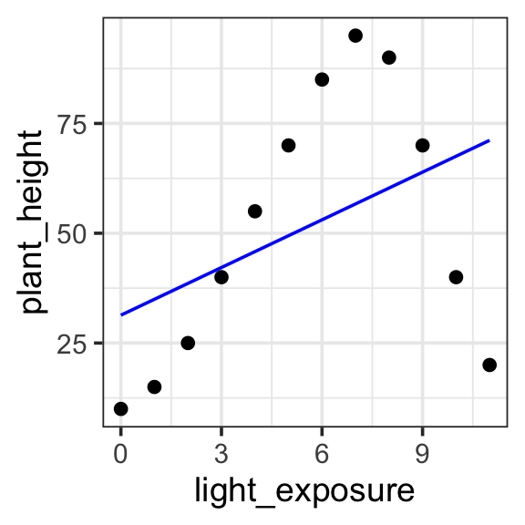
Model specification:
\(y = w_1\cdot\mathbf{1} + w_2 \cdot \mathbf{x}\)
Call:
lm(formula = plant_height ~ 1 + light_exposure, data = poly_plants)
Coefficients:
(Intercept) light_exposure
31.346 3.619 Fitted model:
\(y = 31.346 \cdot 1 + 3.619 \cdot x\)
| plant | light_exposure | plant_height | with_formula | with_predict |
|---|---|---|---|---|
| Sunflower | 0 | 10 | 31.346 | 31.34615 |
| Sunflower | 1 | 15 | 34.965 | 34.96504 |
| Sunflower | 2 | 25 | 38.584 | 38.58392 |
| Rose | 3 | 40 | 42.203 | 42.20280 |
| Rose | 4 | 55 | 45.822 | 45.82168 |
| Rose | 5 | 70 | 49.441 | 49.44056 |
| Cactus | 6 | 85 | 53.060 | 53.05944 |
| Cactus | 7 | 95 | 56.679 | 56.67832 |
| Cactus | 8 | 90 | 60.298 | 60.29720 |
| Orchid | 9 | 70 | 63.917 | 63.91608 |
| Orchid | 10 | 40 | 67.536 | 67.53496 |
| Orchid | 11 | 20 | 71.155 | 71.15385 |
poly_plants <- read_csv('https://kschuler.github.io/datasci/assests/csv/polynomial_plants.csv')
model <- lm(plant_height ~ 1 + light_exposure, data = poly_plants)
poly_plants <- poly_plants %>%
mutate(with_formula = 31.346*1 + 3.619*light_exposure) %>%
mutate(with_predict= predict(model, poly_plants))
poly_plants %>%
ggplot(aes(x = light_exposure, y = plant_height)) +
geom_point() +
geom_line(aes(y = with_predict), color = "blue") +
theme_bw(base_size = 14) Degree 2 (Quadratic)
In a Degree 2 (Quadratic) polynomial, we can express a single bump or curve. The graph is either a U-shape (bowl) or an upside-down U-shape (hill), meaning it can capture one turning point. This provides a better fit for our data, allow us to express the light exposure goes up and then back down again. But it looks like there is another “bump” in the data, going back upward around light exposure of 1 or 2.
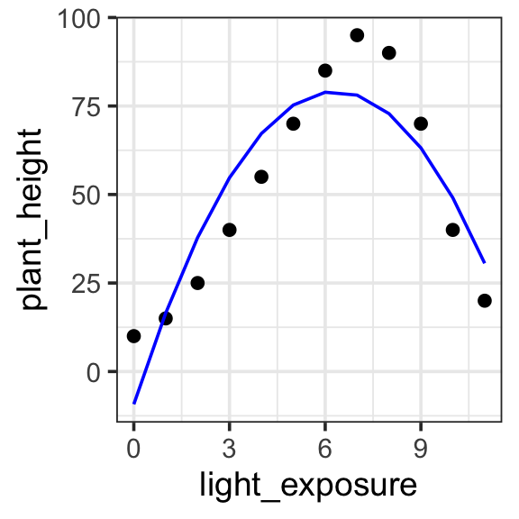
Model specification:
\(y = w_1\cdot\mathbf{1} + w_2 \cdot \mathbf{x} + w_3 \cdot \mathbf{x}^2\)
Call:
lm(formula = plant_height ~ 1 + light_exposure + I(light_exposure^2),
data = poly_plants)
Coefficients:
(Intercept) light_exposure I(light_exposure^2)
-9.245 27.973 -2.214 Fitted model:
\(y = -9.245 \cdot\mathbf{1} + 27.973 \cdot \mathbf{x} + -2.214 \cdot \mathbf{x}^2\)
| plant | light_exposure | plant_height | with_predict |
|---|---|---|---|
| Sunflower | 0 | 10 | -9.244506 |
| Sunflower | 1 | 15 | 16.514735 |
| Sunflower | 2 | 25 | 37.845904 |
| Rose | 3 | 40 | 54.749001 |
| Rose | 4 | 55 | 67.224026 |
| Rose | 5 | 70 | 75.270979 |
| Cactus | 6 | 85 | 78.889860 |
| Cactus | 7 | 95 | 78.080669 |
| Cactus | 8 | 90 | 72.843407 |
| Orchid | 9 | 70 | 63.178072 |
| Orchid | 10 | 40 | 49.084665 |
| Orchid | 11 | 20 | 30.563187 |
model <- lm(plant_height ~ 1 + light_exposure + I(light_exposure^2), data = poly_plants)
poly_plants <- poly_plants %>%
mutate(with_predict= predict(model, poly_plants))
poly_plants %>%
ggplot(aes(x = light_exposure, y = plant_height)) +
geom_point() +
geom_line(aes(y = with_predict), color = "blue") +
theme_bw(base_size = 14) Degree 3 (Cubic)
In a Degree 3 (Cubic) polynomial, we can capture two bumps (or one “S” shaped curve). The graph can have two turning points, meaning it can start by increasing, then decrease, and increase again (or the opposite). This captures the data quite nicely.
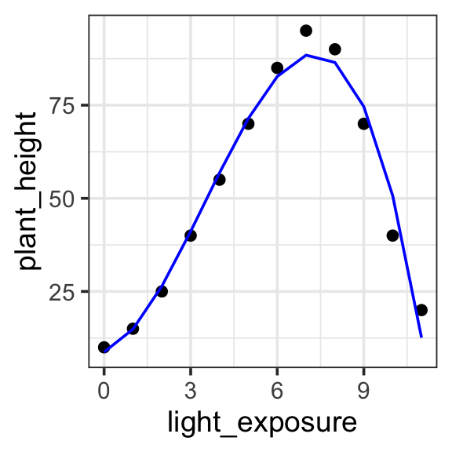
Model specification:
\(y = w_1\cdot\mathbf{1} + w_2 \cdot \mathbf{x} + w_3 \cdot \mathbf{x}^2 + w_4 \cdot \mathbf{x}^3\)
Call:
lm(formula = plant_height ~ 1 + light_exposure + I(light_exposure^2) +
I(light_exposure^3), data = poly_plants)
Coefficients:
(Intercept) light_exposure I(light_exposure^2)
8.7363 2.7276 3.7796
I(light_exposure^3)
-0.3632 Fitted model:
\(y = 8.7363 \cdot \mathbf{1} + 2.7276 \cdot \mathbf{x} + 3.7796 \cdot \mathbf{x}^2 + -0.3632 \cdot \mathbf{x}^3\)
| plant | light_exposure | plant_height | with_predict |
|---|---|---|---|
| Sunflower | 0 | 10 | 8.736264 |
| Sunflower | 1 | 15 | 14.880120 |
| Sunflower | 2 | 25 | 26.403596 |
| Rose | 3 | 40 | 41.127206 |
| Rose | 4 | 55 | 56.871462 |
| Rose | 5 | 70 | 71.456877 |
| Cactus | 6 | 85 | 82.703963 |
| Cactus | 7 | 95 | 88.433233 |
| Cactus | 8 | 90 | 86.465202 |
| Orchid | 9 | 70 | 74.620380 |
| Orchid | 10 | 40 | 50.719281 |
| Orchid | 11 | 20 | 12.582418 |
model <- lm(plant_height ~ 1 + light_exposure + I(light_exposure^2) + I(light_exposure^3), data = poly_plants)
poly_plants <- poly_plants %>%
mutate(with_predict= predict(model, poly_plants))
poly_plants %>%
ggplot(aes(x = light_exposure, y = plant_height)) +
geom_point() +
geom_line(aes(y = with_predict), color = "blue") +
theme_bw(base_size = 14) Brain size (log)
Untransformed
When we have a nonlinear relationship, as here, we could just try to fit a linear model to the untransformed data. It techincally works — there is no math reason that prevents us from fitting this model — but we can see that it is a very bad description of the data.
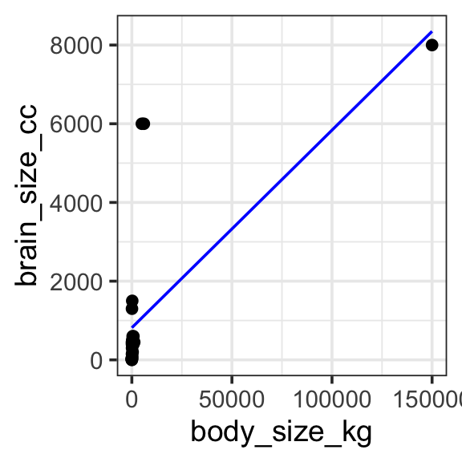
Model specification:
\(y = w_1\cdot\mathbf{1} + w_2\cdot\mathbf{body\_size\_kg}\)
Call:
lm(formula = brain_size_cc ~ 1 + body_size_kg, data = brain_data)
Coefficients:
(Intercept) body_size_kg
816.59014 0.05021 Fitted model:
\(y = 816.59014 \cdot\mathbf{1} + 0.05021 \cdot\mathbf{body\_size\_kg}\)
| Species | brain_size_cc | body_size_kg | with_predict |
|---|---|---|---|
| Mouse | 0.4 | 2.0e-02 | 816.5911 |
| Rat | 2.0 | 2.5e-01 | 816.6027 |
| Rabbit | 12.0 | 1.5e+00 | 816.6655 |
| Cat | 25.0 | 4.5e+00 | 816.8161 |
| Dog | 50.0 | 1.0e+01 | 817.0923 |
| Sheep | 150.0 | 7.0e+01 | 820.1049 |
| Pig | 300.0 | 1.0e+02 | 821.6113 |
| Goat | 450.0 | 5.0e+01 | 819.1007 |
| Gorilla | 500.0 | 1.8e+02 | 825.6282 |
| Horse | 600.0 | 4.0e+02 | 836.6747 |
| Human | 1300.0 | 7.0e+01 | 820.1049 |
| Chimpanzee | 400.0 | 6.0e+01 | 819.6028 |
| Dolphin | 1500.0 | 2.0e+02 | 826.6324 |
| Whale (Orca) | 6000.0 | 5.0e+03 | 1067.6469 |
| Elephant | 6000.0 | 6.0e+03 | 1117.8583 |
| Blue Whale | 8000.0 | 1.5e+05 | 8348.2943 |
| Giraffe | 600.0 | 8.0e+02 | 856.7592 |
| Rhinoceros | 450.0 | 1.2e+03 | 876.8438 |
| Walrus | 400.0 | 8.0e+02 | 856.7592 |
| Tiger | 90.0 | 2.2e+02 | 827.6366 |
| Kangaroo | 50.0 | 6.0e+01 | 819.6028 |
| Crocodile | 200.0 | 4.0e+02 | 836.6747 |
| Penguin | 20.0 | 3.0e+01 | 818.0965 |
brain_data <- read_csv('https://kschuler.github.io/datasci/assests/csv/animal_brain_body_size.csv') %>%
rename(brain_size_cc = `Brain Size (cc)`, body_size_kg = `Body Size (kg)`)
model <- lm(brain_size_cc ~ 1 + body_size_kg, data = brain_data)
brain_data <- brain_data %>%
mutate(with_predict= predict(model, brain_data))
brain_data %>%
ggplot(aes(x = body_size_kg, y = brain_size_cc)) +
geom_point() +
geom_line(aes(y = with_predict), color = "blue") +
theme_bw(base_size = 14) Log transformed
We can apply a log transform directly in the model specification provided to R. This works great, but if we try to plot the fitted model on untransformed data (e.g. if we use brain_size_cc and body_size_kg as our y and x aesthetics) something doesn’t seem quite right. Instead, we should plot the data transformed to log as well, so the model predictions match the data.
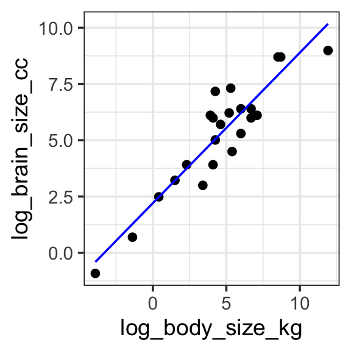
Model specification:
\(log(y) = w_1\cdot\mathbf{1} + w_2 \cdot log(\mathbf{body\_size\_kg})\)
Call:
lm(formula = log(brain_size_cc) ~ 1 + log(body_size_kg), data = brain_data)
Coefficients:
(Intercept) log(body_size_kg)
2.2042 0.6687 Fitted model:
\(log(y) = 2.2042\cdot\mathbf{1} + 0.6687 \cdot log(\mathbf{body\_size\_kg})\)
| Species | brain_size_cc | body_size_kg | log_brain_size_cc | log_body_size_kg | with_predict |
|---|---|---|---|---|---|
| Mouse | 0.4 | 2.0e-02 | -0.9162907 | -3.9120230 | -0.4116321 |
| Rat | 2.0 | 2.5e-01 | 0.6931472 | -1.3862944 | 1.2772249 |
| Rabbit | 12.0 | 1.5e+00 | 2.4849066 | 0.4054651 | 2.4753051 |
| Cat | 25.0 | 4.5e+00 | 3.2188758 | 1.5040774 | 3.2099046 |
| Dog | 50.0 | 1.0e+01 | 3.9120230 | 2.3025851 | 3.7438358 |
| Sheep | 150.0 | 7.0e+01 | 5.0106353 | 4.2484952 | 5.0449906 |
| Pig | 300.0 | 1.0e+02 | 5.7037825 | 4.6051702 | 5.2834853 |
| Goat | 450.0 | 5.0e+01 | 6.1092476 | 3.9120230 | 4.8200046 |
| Gorilla | 500.0 | 1.8e+02 | 6.2146081 | 5.1929569 | 5.6765155 |
| Horse | 600.0 | 4.0e+02 | 6.3969297 | 5.9914645 | 6.2104467 |
| Human | 1300.0 | 7.0e+01 | 7.1701195 | 4.2484952 | 5.0449906 |
| Chimpanzee | 400.0 | 6.0e+01 | 5.9914645 | 4.0943446 | 4.9419160 |
| Dolphin | 1500.0 | 2.0e+02 | 7.3132204 | 5.2983174 | 5.7469660 |
| Whale (Orca) | 6000.0 | 5.0e+03 | 8.6995147 | 8.5171932 | 7.8993037 |
| Elephant | 6000.0 | 6.0e+03 | 8.6995147 | 8.6995147 | 8.0212150 |
| Blue Whale | 8000.0 | 1.5e+05 | 8.9871968 | 11.9183906 | 10.1735527 |
| Giraffe | 600.0 | 8.0e+02 | 6.3969297 | 6.6846117 | 6.6739274 |
| Rhinoceros | 450.0 | 1.2e+03 | 6.1092476 | 7.0900768 | 6.9450462 |
| Walrus | 400.0 | 8.0e+02 | 5.9914645 | 6.6846117 | 6.6739274 |
| Tiger | 90.0 | 2.2e+02 | 4.4998097 | 5.3936275 | 5.8106962 |
| Kangaroo | 50.0 | 6.0e+01 | 3.9120230 | 4.0943446 | 4.9419160 |
| Crocodile | 200.0 | 4.0e+02 | 5.2983174 | 5.9914645 | 6.2104467 |
| Penguin | 20.0 | 3.0e+01 | 2.9957323 | 3.4011974 | 4.4784353 |
model <- lm(log(brain_size_cc) ~ 1 + log(body_size_kg), data = brain_data)
brain_data <- brain_data %>%
mutate(
log_brain_size_cc = log(brain_size_cc),
log_body_size_kg = log(body_size_kg)
) %>%
mutate(with_predict= predict(model, brain_data))
brain_data %>%
ggplot(aes(x = log_body_size_kg, y = log_brain_size_cc)) +
geom_point() +
geom_line(aes(y = with_predict), color = "blue") +
theme_bw(base_size = 14) Further reading
- Ch 6: Language of models in Statistical Modeling